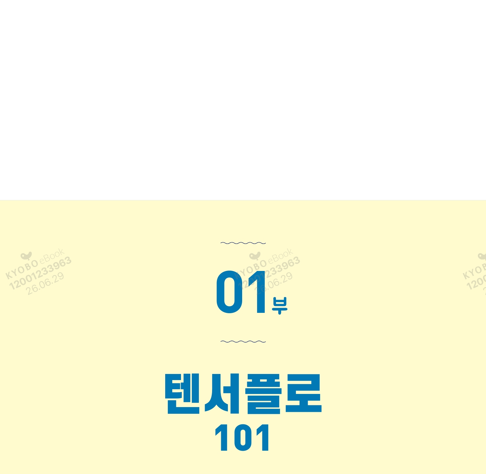
이 수업은 코드로 인공지능을 구현해보는 딥러닝 기초 수업입니다.
텐서플로를 이용해 가장 간단한 형태의 딥러닝 모델을 작성합니다.
무엇을 넣을지가 아니라 무엇을 뺄지를 고민하며 만들었습니다.

이 수업은 코드로 인공지능을 구현해보는 딥러닝 기초 수업입니다.
텐서플로를 이용해 가장 간단한 형태의 딥러닝 모델을 작성합니다.
무엇을 넣을지가 아니라 무엇을 뺄지를 고민하며 만들었습니다.
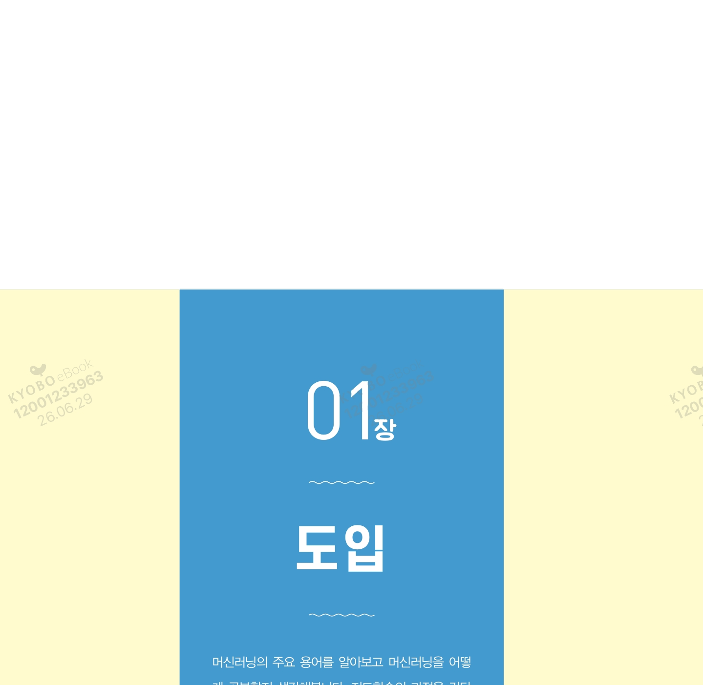
선수 지식: 이 수업을 듣는 데 필요한 지식은 다음과 같습니다.
- 파이썬(Python) 언어
- 머신러닝 이론
'머신러닝', '지도학습', '모델', '인과관계'와 같은 말의 의미가 무엇인지 모르신다면 오픈튜토리얼스의 머신러닝 입문 수업인 <머신러닝 1>을 먼저 보신 후 이 수업에 참여하시기를 권합니다.

머신러닝: 기계를 학습시켜 인간의 판단 능력을 기계에 위임하는 기술이 머신러닝(machine learning)입니다. 머신러닝이라는 이름에는 실로 많은 기술이 포함되어 있습니다. 유명한 것들만 살펴보면 이렇습니다.
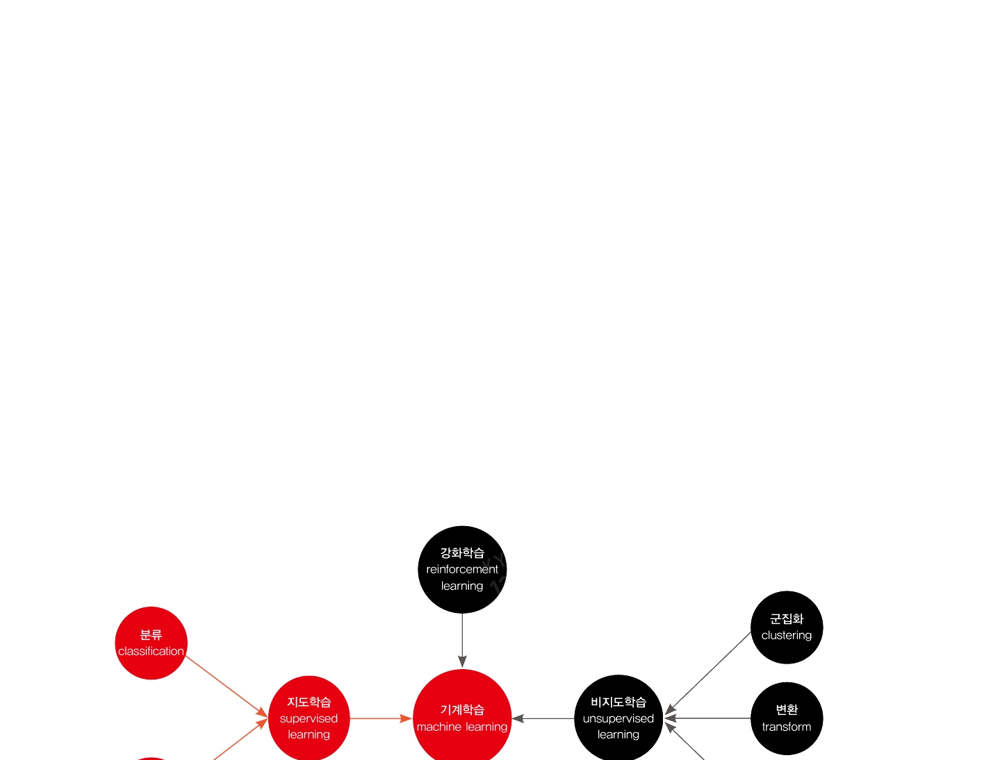
회귀 regression
연관
association
그림 1,.1 머신러딩 지도
이 지도는 머신러님으로 할 수 있는 여러 가지 일들올 보여중니다 우리가 렌서플로릎 이용해 서 해결하려고 하는 문제는 지도학습(supervised learning) 영역의 회귀(regression) 문제 와 분류(classification) 문제입니다. 회귀는 숫자로 된 결과루 예측하는 것이고 분류휴는 범주 (category) 형태의 결과루 예측하는 것입니다.
회귀
분류
regression
classilication
양성 음성
2
그림 1,2 회귀와 분류 문제
머신러님 알고리롬 분류와 회귀 문제틀 풀기 위해서 다양한 머신러님 알고리롬이 쓰입니다. 유명한 알고리증 (algorithm) 으로는 다음과 같은 것들이 있습니다.
0부 렌서들로 101
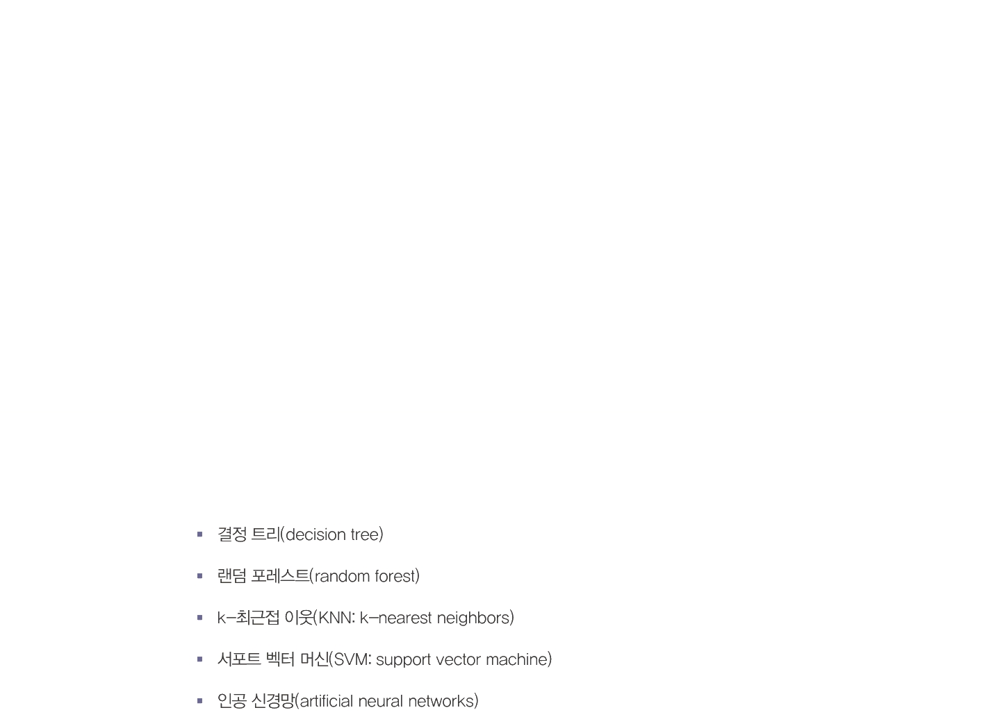
인공 신경망 이 책에서 다루는 알고리증은 인공 신경망입니다. 인공 신경망은 사람의 뇌가 작동하는 방법 올 모방해서 기계가 학습할 수 있도록 고안된 알고리롬입니다.
우리 두뇌에는 뉴런(neuron) 이라고 하는 세포들이 춤츰하게 연결돼 있는데요 뉴런들로 연결된 신경망올 인공적으로 만들없다는 의미에서 인공 신경망이라는 이름올 갖게 되/습 나다.
V
그림 1.3 뉴런으로 이뤄진 신경망
덥러딩
지금은 인공 신경망보다 덥러님(deep learning) 이라는 이름이 더 유명한 것 같습니다. 인공 신경망올 깊게 쌓아서 만들없다는 표현으로 덥러넣이라는 단어름 쓰기 시작햇고. 이 표현이 오늘날 널리 사용되니다.
덥러님 . 뉴력 넷. 인공 신경망. 이 이름들은 모두 인간의 신경올 모방한 이론올 가리키는; 같 거나 비슷한 말입니다.
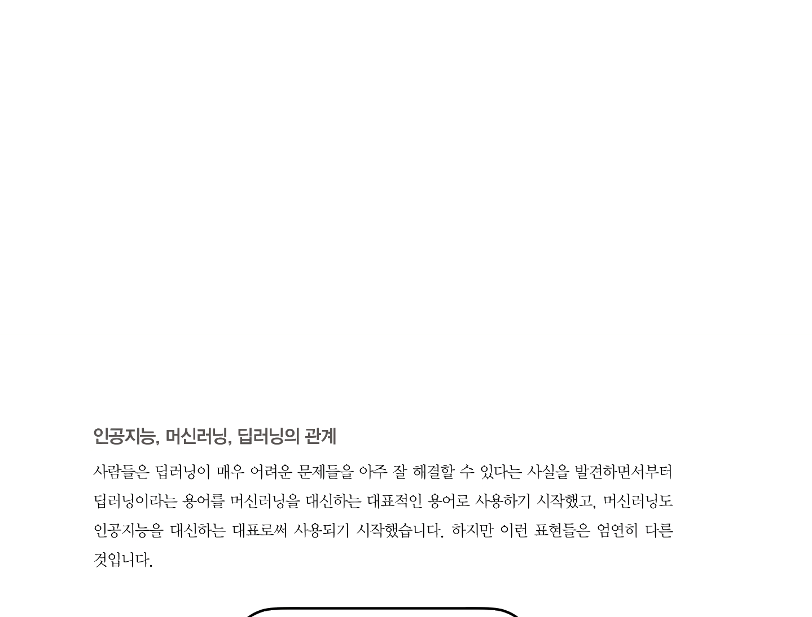
Artificial Intelligence 인공지능
Machine Learning 기계학습
Deep Learning 덥러딩
그림 1.4 인공지능 머신러님 덥러널의 관계
덥러님 라이브러리 이 '덥러넣' 이라는 이론올 공부해서 컴퓨터름 작동시키고 여러 가지 문제름 해결하는 것이 과 연 쉬운 일일까요? 아법니다. 불과 몇 년 전만 해도 . 아무리 천재라고 해도 어떤 대기업이라 도 할 수 없는 일들이 있없습니다. 그런 어마어마한 일들올 오늘날에는 덥러님올 이용하여 해 날 수 엇게 되없습니다.
그분만 아니라 구체적인 덥러님의 원리지 몰라도 코드만 작성하면 덥러님으로 문제름 해결활 수 있는 여러 도구가 등장쾌습니다. 코덩의 세계에서논 이런 도구들올 라이브러리라고 부름 나다.
6 07부 렌서들로 101
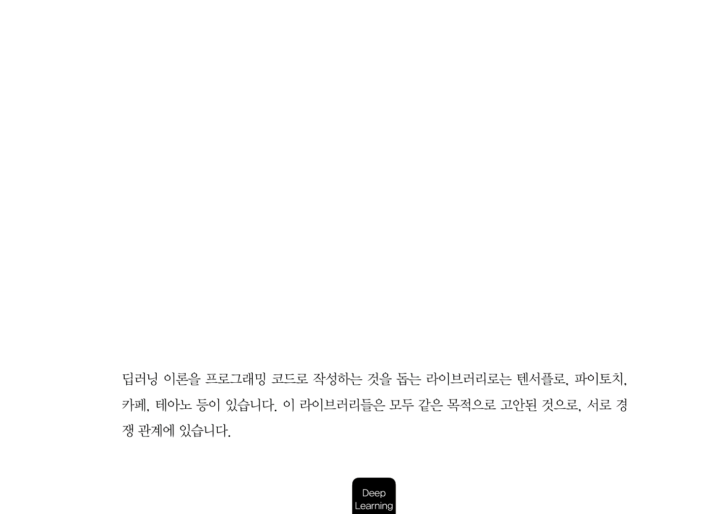
지도학습: 지도학습은 마치 선생님이 학생에게 정답을 가르쳐주듯, 역사적인 데이터를 머신러닝 알고리즘에 지도(공부)시켜 학습을 진행하는 방식입니다.
과거의 원인과 결과를 학습하여 향후 미래에 예측 모델을 만들어내는 방법이기도 합니다.
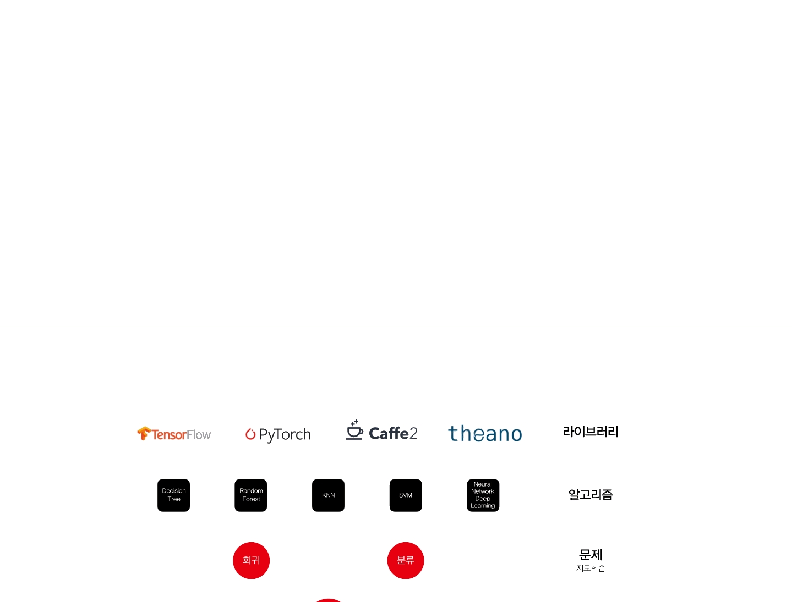
machine learning
Al 그림 1.7 라이브러리 알고리증 지도학습 머신러님
이 개념올 파악하는 것만으로 여러분은 다른 사람과 소통할 수 있고 인공지능에 대한 여러 가 지 정보들올 이해할 수 잎게 되없습니다. 앞으로 배율 어떤 지식도 여러분올 이렇게 크게 바 귀놓지는 못할 것입니다. 설렁 여러분이 이 영상만 보고 남은 수업은 미래로 유보햇다라도 사 실은 가장 경제적인 공부름 한 것이라는 점올 잊지 마세요.
그럼 지금부터 머신러넣이라는 슈퍼 파위틀 구체적으로 배워붙시다.
준비차나요? 출발하켓습니다.
8 07부 렌서들로 101
기본 코드 및 데이터 형태
독립변수(원인)와 종속변수(결과)를 선언하여 데이터를 수집하고 분류합니다.
여기서 판다스(Pandas) 라이브러리를 사용해 데이터를 분리하고 처리해 줍니다.
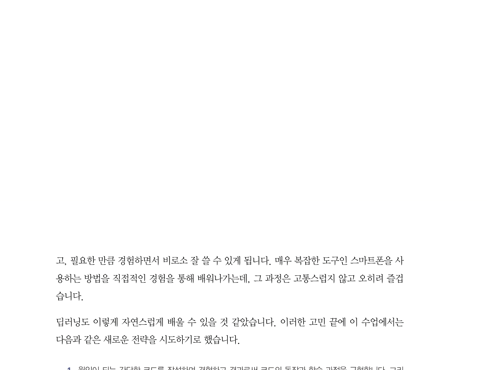
너너니 디드 나내년 그-근 어이내 영흥이느 근니 -씨 스스니 9구니 부분 니영크 ! 고그니니
고해당 코드트 어떻게 이용하면 좋율지 추족해붙니다
2 원인이 되는 또 다른 형태의 코드트 작성하고 결과루 구경합니다
그렇게 몇 가지 코드트 작성하고 결과루 반복하여 구경하면서 답러님올 구현하는 시간올 가 질 것입니다. 그 과정에서 코드와 알고리증의 동작에 익숙해지는 것이조
혹시 이 전락이 익숙하게 느껴지진 않으신가요? 원인과 결과틀 기계에 보여주고 기계가 그 사이의 관계름 스스로 학습하게 하는. 그리고 지금 덥러님으로 구현해보려 하는 지도학습의 방법과 같습니다.
이 지도학습은 사실 무어가루 배우기 위해 사람들이 아주 익숙하게 사용하는 방법입니다. 그 방법올 기계에 알려준 것에 불과하조.
분류
classitication
지도학습 supervised learning
회귀
regression
그림 1.8 지도학습은 사람이 아주 익숙하게 사용하는 방법입니다
10 07부 렌서들로 101
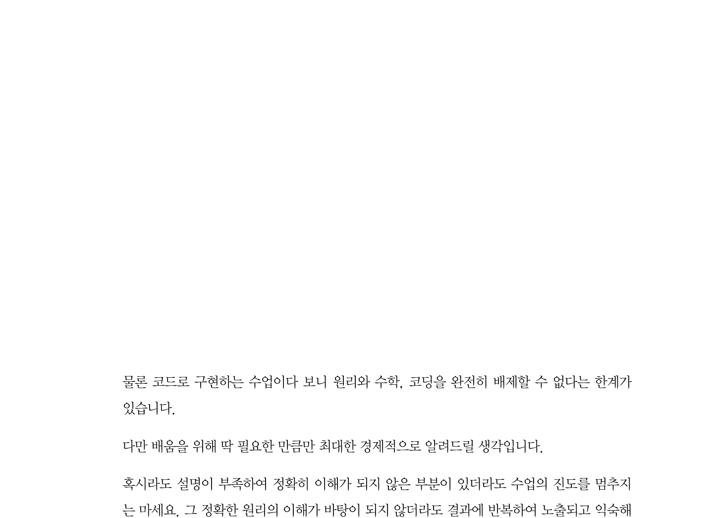
지다 보면 그 원리와 개념올 스스로 깨우처 가능 자신올 발견할 수 있올 겁니다.
끝까지 걸어가 붙시다! 여러분올 열심히 응원하켓습니다.
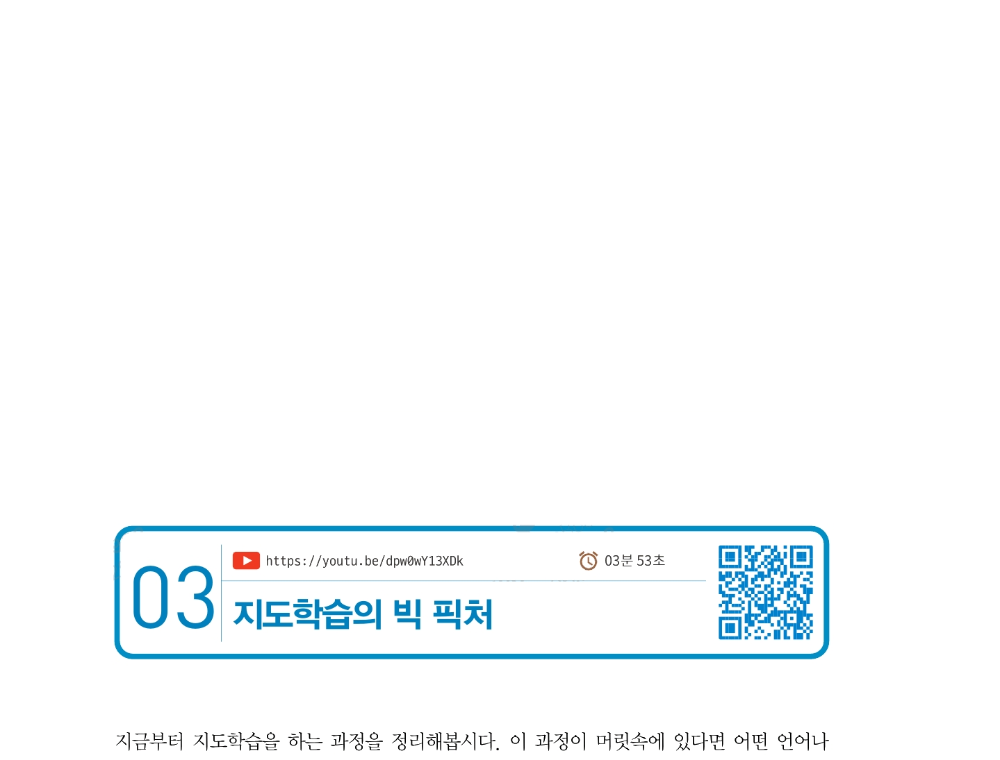
도구름 사용하더라도 당황하지 양울 것입니다. 이 과정이 머릿속에 없다면 도구가 조금만 달라저도 여러분은 다시 배워야 할 것입니다. 머릿속에 이 과정이 없으면 이해가 잘 되지 양 고 쉽게 잊어버리는 것이 당연합니다.
#1 과거의 데이터지 준비합니다 지도학습올 하려면 우선 과거의 데이터가 있어야 합니다.
여러분이 레모네이드 카페틀 운영하다고 상상해붙시다 우리가 장사름 하면서 정리한 데이터 눈 이렇계 생겨습니다.
표1 1 온도와 판매량
온도
판매량
20
40
2
42
22
44
23
46
여러분에제는 고민이 있습니다. 레듬올 많이 준비하면 버려야 하고 적게 준비하면 손님올 놓치게 덥니다.
지금 여러분의 꿈은 판매량올 예측하는 것입니다. 가만히 표틀 보고 있던 여러분은 온도에 따 라서 판매량이 달라진다는 것올 눈치챙습니다. 즉 온도와 판매량 사이에 관계가 있다는 사실 올 알아번 것이조. 지도학습에서 가장 중요한 순간입니다.
12 07부 렌서들로 101
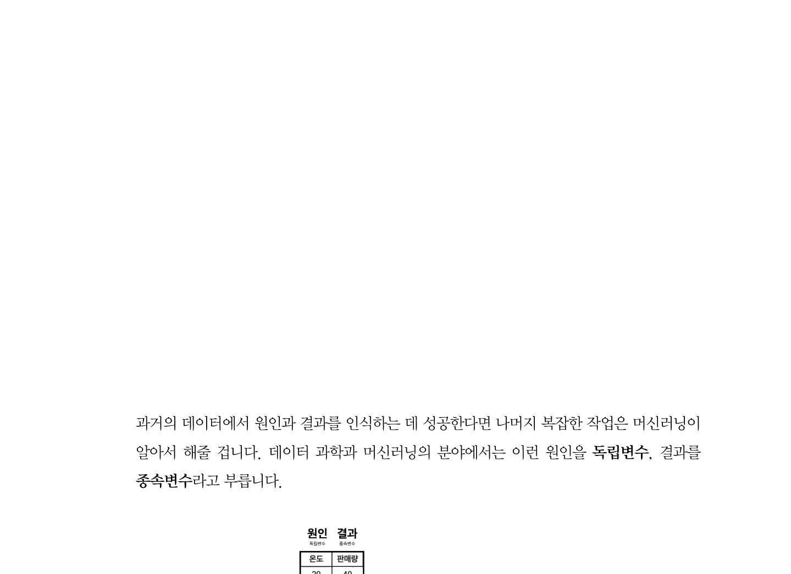
42 44
# 1.과거의 데이터클 준비합니다
22
23
그림 1.9 과거의 데이터지 준비
#2 모델의 구조름 만큼니다 온도름 알려주면 판매량올 예측해주는 기계름 만들어 붙시다. 이런 기계름 머신러넣에서는 모델이라고 합니다.
우선 해야 할 일은 모델의 구조름 만드는 것입니다. 독립변수도 하나이고 종속변수도 하나인 데이터틀 가지고 있으으로 다음 그림처럼 생긴 모델올 만들면 되직군요
# 2. 모델의 구조v 만큼니다
모델
그림 1.10 모델의 구조름 만들기
독립변수가 3개. 종속변수가 2개인 모델의 구조v 다음 그림과 같이 나타날 수 있습니다.
모델
그림 1.11 독립변수가 3개 종속변수가 2일 때의 모델
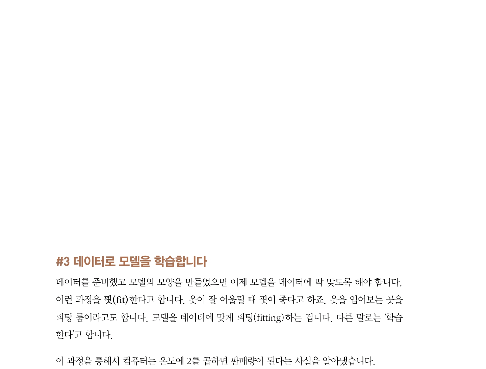
이제 모델이 완성되네요
독립변수 종속변수
온도
판매량
21 22 23
42 44
# 3 데이터로 모델올 학습(FIT)합니다
모델
그림 1.12 모델올 학습
#4 모델올 이용합니다 이제 모델올 그냥 이용하면 덥니다.
여러분은 일기예보틀 보고 내일의 온도가 15도라는 것올 알아내습니다. 이것올 모델에게 입 력하면 온도 15 X 2틀 해서 판매량올 30개로 예측합니다. 그리고 그 결과틀 우리에게 알려 주조. 그럼 여러분은 레모네이드 30개 분량의 레듬올 준비하면 되고 이제 우리늄 행복해적 습니다:
14 0부 렌서들로 101
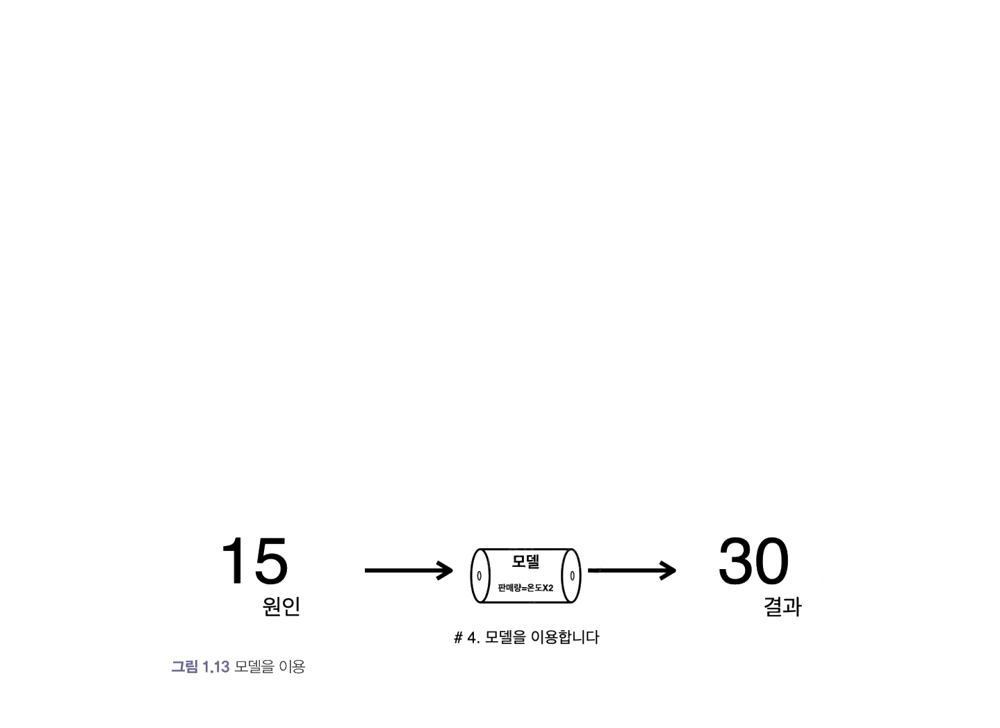
정리 이 과정올 다시 떠올려 붙시다.
1. 과거의 데이터름 준비합니다:
2 모델의 구조v 만듬니다
3. 데이터로 모델올 학습시길니다.
4. 모델올 이용합니다.
익숙해질 때까지 계속 반복해서 따라 해보세요. 이것이 확실하다면 우리 수업은 어려움 것이 하나도 없습니다.
독립변수 종속변수
온도 20
판매량
42
# 1.과거의 데이터지 준비합니다.
22 23
44 46
# 3 데이터로 모델올 학습(FIT)합니다.
# 2. 모델의 구조v 만문니다
15 원인
모델
30 결과
판매량_온도X2
# 4. 모델올 이용합니다
그림 1.14 지도학습의 과정
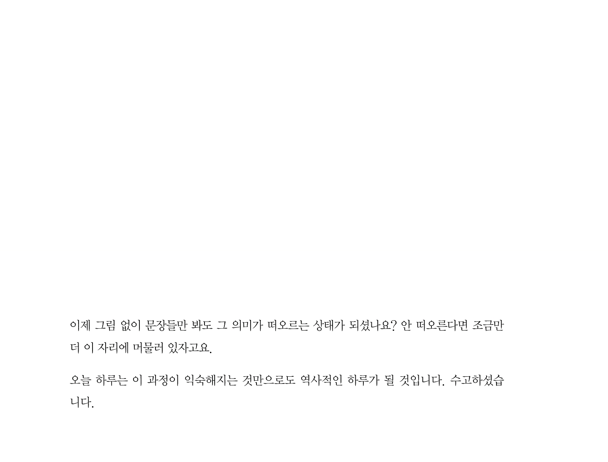
16 07부 렌서들로 101
이 책에서는 구글의 콜라보레이터리(Colaboratory. 이하 '코램) 라는 서비스홀 이용합니다. 코램 환경올 이미 알고 계신다면 바로 2장으로 건너뛰어도 덥니다. 코램이 문지 모르시는 분 함께 실습활 환경올 준비해보켓습니다.
구글 코램 소개 데이터 과학과 머신러넣에 사용되는 도구로서 가장 유명한 도구는 주피터 노트북(jupyter notebook)이 있습니다. 노트북이라고 불리는 파일올 웬 브라우저로 실행하여 쉽제 프로그 래망올 해볼 수 있는 환경올 제공하는 도구입니다. 데이터클 다루는 일흘 하는 사람들에게 큰 인기가 있습니다. 주피터 노트북올 여러분이 직접 자신의 컴퓨터에 설치할 수도 있고, 온라인 서비스틀 통해 이용할 수도 있습니다.
opro기
3ufungi
#T -dann color- 44J7020"zpytuitontrhon nntaon calnrz#어J77d"zr파fontzbnnkz/hiz
Launchet
Nulrloynb
Outout V 적
SoutTo Woathufi 2012 2015
Noteboox
S30 Tvoi
Pinon ]
Cdll
Cele
Cs+ 17
구T Naront Foimit
Advanccd Tools
tal
LellMotadave
Julu 1lD
riont다 [ytror }기
Consolo
Noreboou Welodota
#krrnrsrrcw #dtsplay_A+니 #Puthon -aryunge EDython# Wython]"
jupyter notebook
에 ' Numbamoocuud
Juwipyrb
Rlonrt
tunqusnt_inta- CoI 어 8 Wnont Ginvtron 티나eTs1ora;
Warkoowr
Prthon -
Markoown
Julia
python notebook
"t+terrte 5 on " Enic tipe ILOAUA-VLhone pyuhon Enbconvert eroarteri wUVhan orDtnta lerer" "Lpython Everglonn 벼J6. 7
using RDatubot, Gsdtly plotidstitet("ditisct;" "1r1;"1 표'34
"SooNot ldsts irls, Gc3/1uSnnLLen
Hutouoti InLine ipyyidge ts Amport neTo
V1ned
We erDlore the Lorenz system ol dlulerentlal cqitons'
Locrnrirbrrlnai - 14li디 Veut hd어n toc_shorcurkdount고l L' Jr
p - Y -u - + D
Let s Changu (nn witnioywidgats and oramnnihrtiircdin
그림 1.15 주피터 노트북
E_a
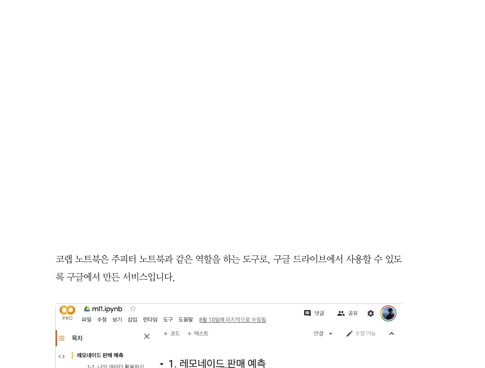
보스템 집값 예측 아이리스 분류하기 3-1. onehot encoding 3-2 accuracy hidden layer
tr
Colab notebook 니다
^ V C 터 +
씩선
[21] [22] , [23] 7 ]) 8 종속 pd DataFrame
그림 1,.16 코램 노트북
코램 실습 환경 준비 구글 드라이브(https:/ldrive.google. com)에 접속해 새로 만들기 버튼올 누른 다음 더보기 연결할 입 더보기름 선택합니다.
18 07부 렌서들로 101
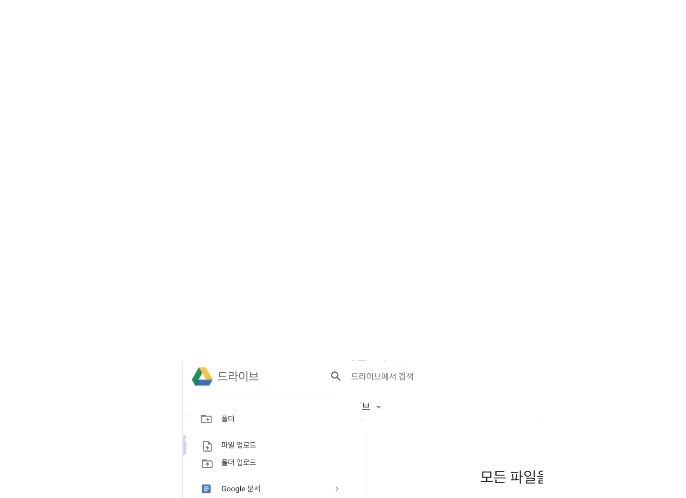
Google 스프레드시트 Google 프레전테이선
문서, 스프레드시트, 프레전테이선 등의 Google 편집기
더보기
Google 설문지 Google 드로임 Google 내 지도
저장용량
터
15GB 중 @바이트 사용
Google 사이트 도구 Google Apps Script
저장용량 구매
Google Jamnboard
연결할 업 더보기
그림 1.17 구글 드라이브의 '연결할 업 더보기' 메뉴
그러면 입을 검색활 수 있는 화면이 나타납니다. 여기에 'CoLaboratory 라고 입력해 검색하면 검색 결과가 나타납니다.
Google Workspace Marketplace
Colaboratory
8 U X
검색결과: Colaboratory
CO Colaboratory colab-teamn Cclabis Jupyter notebook ervironmnent thatrunsinthe browser using Google Cloud
*4.7
8,280,898
그림 1.18 Google Workspace Marketplace에서 'Colaboratory'틀 검색
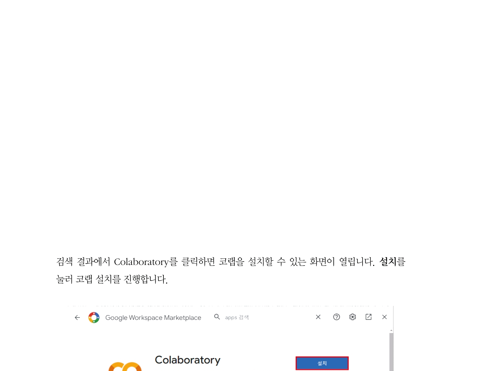
Colab is Jupyter notebook environrnent that runs in the browser using Google Cloud
;
개발자: cOlab_Lan다
호환 기기:
{사구 3,425
8,280,898
사용 권한
리투
Velconic Cosbcalor" W버어 Irre Au "Inrt
-
slanir
e6p" ICEm
어 :
HVA r니]
C9 What is Colaboratory?
Gulaz,EDry
Coup
Slim- "JwS wou
jiite an erecuLt: Pyuhiun ili VC:a bloa3g , WIUhi
그림 1.19 Colaboratory 설치
CO 설치 가능
올(들)Colaboratory 설치하러면 권한이 필요할 니다,
좌속들 틀릭하면 어들리"이선의 서티스 약관 및 인점트 ~리방침어 따라 내 점보가 사용되는 젓어 동의하거 립니다
계속
그림 1,20 Colaboratory 서비스 약관 및 개인정보처리방침 동의
설치가 되면 이렇게 설치가 되없다는 표시가 나흉니다.
20 0부 렌서들로 101
개요
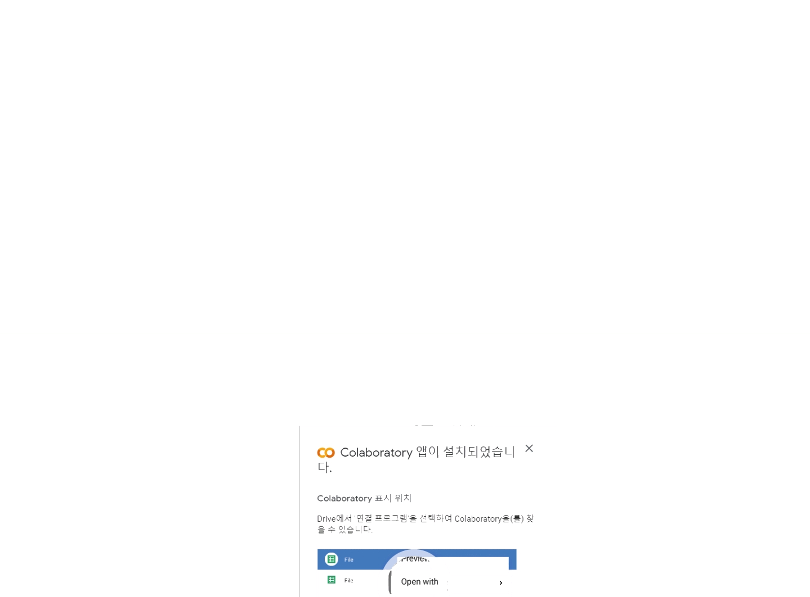
안료
그림 1.21 Colaboratory 설치 완료
코램 노트북 사용해보기 구글 드라이브에서 새로 만들기 버튼올 누르면 더보기에 Google Colaboratory 메뉴가 추 가되어 있을 것입니다.
풀더
전처 화면들 종료하러면
파일 업로드
플더 업로드
모든 파일들
Google 문서
Google 스프레드시트
문서 스프레드시트, 프레전테이선 등의 Google 편집기 =
Google 프레전테이선
더보기
Google 설문지
저장용량
Google 드로임
15GB 중 이바이트 사용
Google 내 지도
Google 사이트 도구
저장용량 구매
Google Apps Script Google Colaboratoyy Google Jamboard
연결할 입 더보기
그림 1.22 구글 드라이브에서 Colaboratory 노트북 만들기
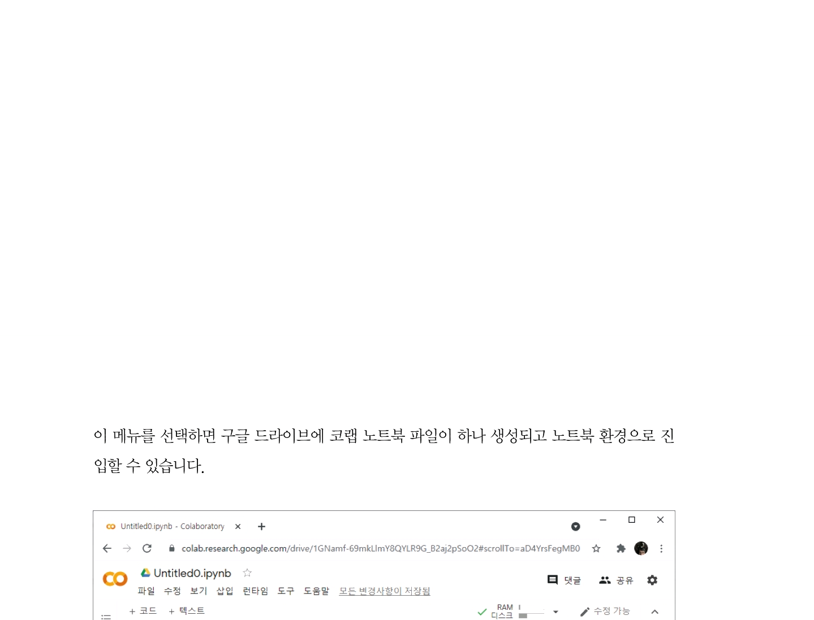
터 4 민
0초
오전 11.30에 판로씨
그림 1.23 코립 노트북 화면
바로 보이는 커서가 깜박이는 곳올 셈(cell) 이라고 합니다. 코드트 작성해 보켓습니다. 코드 틀 작성한 다음 왼쪽의 실행 버든(O)올 누르면 코드가 실행되고 결과가 아래에 나타남니다.
Untitledo,ipynb CO 파일 수정 보기 삼입 런타임 도구 도움말
코드
텍스트
prlnt ( "안념 콜라보레이토리" )
안녕 콜라보리이토리
그림 1.24 실에 코드트 작성하고 실행
설올 여러 개 추가할 수 있습니다. 마우스 포인터v 셈 위쪽이나 아래쪽 가운데에 갖다 농으 면 코드 설올 추가하는 버튼이 나타남니다. 또는 상단 메뉴 바로 아래 왼쪽의 + 코드트 클렉 해 코드 설올 추가할 수도 있습니다.
22 0부 렌서들로 101
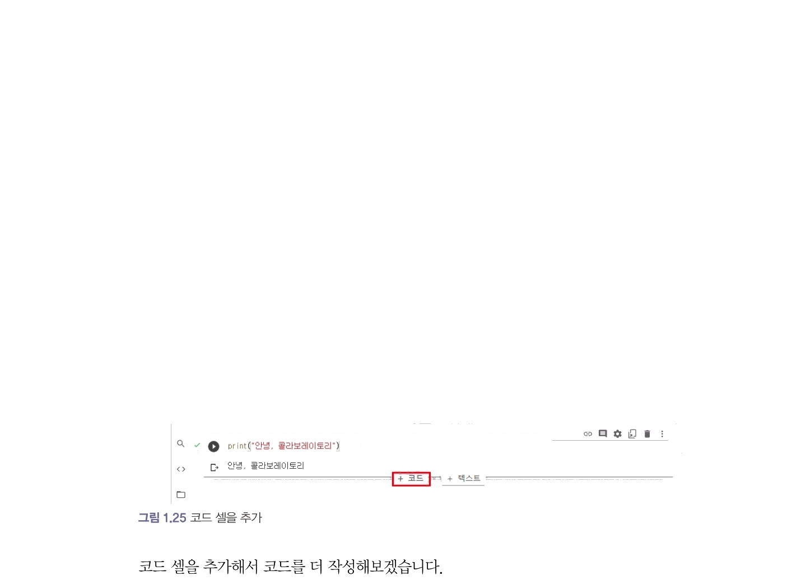
text helo, python print(text)
실행 결과
hello, python
버튼올 둘러도 되지만 Ctrl+Enter
Shift+Enter틀 둘러 실행할 수도 있습니다.
Ctrl+Enter틀 누르면 실행한 후데도 실 안에 머물러 있으므로 같은 설올 반복해서 실행할 수 있습니다
Shift+Enter틀 치면 설올 실행하고 다음 설로 넘어갑니다. 그래서 순차적으로 설의 코드트 실행시키면 서 진행할 때 사용하면 덥니다
이렇게 실행이 잘되없으면 실습할 준비가 끝난 것입니다. 노트북 환경이 처음인 분들은 아직 익숙하지 양젯지만. 계속 수업올 이곳에서 할 것이므로 반복해서 이용하다 보면 자연스럽게 익숙해질 것입니다.
소스 코드
실습올 하다 보면 여러 문제가 있올 수 있는데, 그럴 때는 아래 주소에 들어오시면 코드트 비 못해서 수업에 필요한 여러 정보름 찾올 수 있습니다.
http:llopentutorials.orglmodule/4966
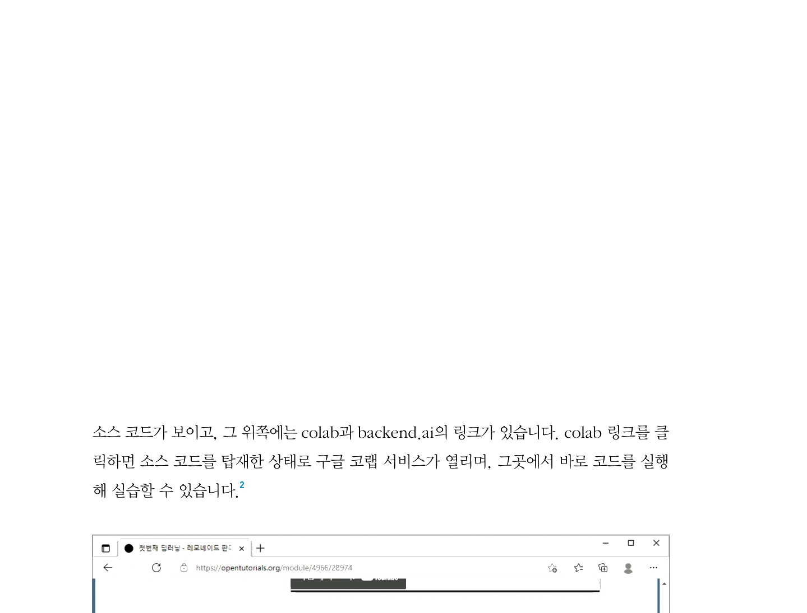
소스코드
calab backendal
#==:##==#**++=::::#===##::+ 라미브러리 사용
import =-39-=_jn
import 5andas 13 드d
#m콤콤 # #륭 # # #m: 콤콤 골 콤콤 # # ## # # l륭 급 급 데이터들 준비합니다 . 파일경로 h--59 : / / -40 9-55t543=-c97-97- ccrjc_sc<1스7 스:34-21982/733다스- 레모네미드 -ead CEV 파일경로) 레모네미드 .hesa { ) 종속변수 , 독립변수 오른튜도리업스의 후원회원은 도집합니다 독립 레모네미드 [ [ '온도' ]! 종속 레모네이드 [ ' 판매량' ] ;
그림 1.26 소스 코드 실습 림크(colab과 backendai)
준비가 되없으면 첫 번째 코드 실습올 해불까요?
(워은이) 각 실습이 있는 절의 시작 부분에 해당 코드룹 코램에서 실행활 수 있는 단축 URL올 넣어습니다
24 0부 렌서들로 101
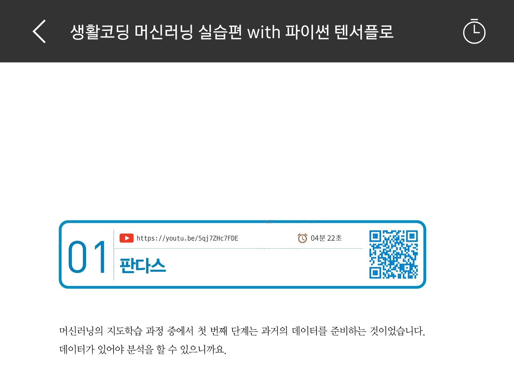
그런데 우리가 가진 데이터는 대부분 파일의 형태로 돼 있습니다. 파일에 들어있는 데이터지 사용하려면 프로그램으로 읽어들이는 과정이 필요합니다. 덥러님 수업올 시작하기 전에 먼저 이에 해당하는 코드들올 학습하고 실습해보켓습니다.
'변수의 의미 우선 '변수라는 용어부터 짚고 넘어가켓습니다.
X = 1이라고 표시하면 이제부터 X눈 1입니다.
X = 1
X = 2라고 표시하면 그때부터 X눈 2가 덥니다.
X = 2
X의 값은 달라질 수 있습니다. 그래서 이런 X틀 변수(variable) 라고 합니다. 프로그래망올 할 때도 변수라는 용어름 사용합니다.
다음은 프로그램올 작성한 예시인데요 등호 왼쪽에 있는 것들올 변수라고 합니다. 앞에서 X틀 표현한 변수와 모양이 같습니다.
데이터 불러오기 파일경로 Lemonade.CSV 데이터 pdread_csv(파일경로)
26 01부 테서들로 101
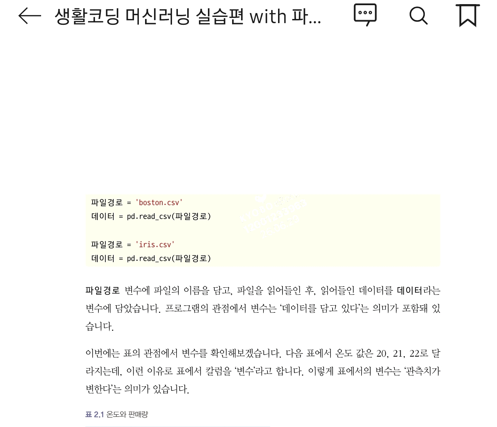
날짜
요일
온도
판매량
2020,13
금
20
40
2020.1.4
토
2
42
20201.5
일
22
프로그래망의 관점과 데이터의 관점에서 '변수 라는 용어름 공통으로 사용하지만 그 사이에 눈 미표한 차이가 있다는 것올 이해하서야 합니다. 대부분 문서에서 변수라는 단어름 혼용하 눈데, 변수름 데이터의 축면에서 사용하 것인지 프로그램의 관점에서 사용하 것인지 매각올 알아야 이해할 수 있기 때문입니다.
표클 조금 더 자세히 들여다보면 온도와 판매량은 밀접한 관계가 있는 것이 보입니다. 온도가 20도일 때 40잔이 팔럿고 21도일 때는 42잔이 팔로습니다. 원인은 온도 그리고 결과는 판매량입니다 . 이렇게 원인이 되는 변수름 독립변수 결과가 되는 변수름 종속변수라고 합니다.
하나의 표 안에는 독립변수와 종속변수가 함께 표현되어 잇는데. 지도학습은 이 두 가지틀 구 분하는 데서 시작합니다. 프로그래망올 이용하여 지도학습올 할 때도 마찬가지로 독립변수와 종속변수름 분리하는 작업이 필요합니다.
02장 표릎 다루는 도구
2
9
13% (43/320p)
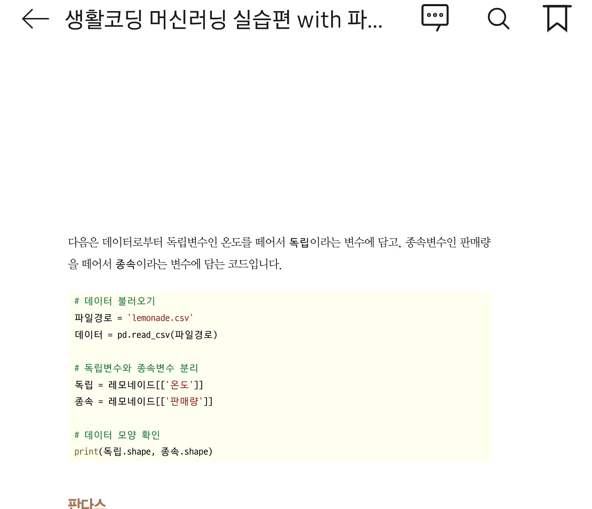
우리가 이렇게 쉽제 표름 불러와서 분리할 수 있는 것은 표v 다루는 환상적인 판다스 (pandas) 라이브러리 덕분입니다.
판다스틀 사용하러면 가장 윗부분에 다음과 같은 코드트 추가합니다. 이 코드트 실행한 뒤부 터는 지금까지 배월년 대로 데이터지 불러오고 분리하는 코드트 사용할 수 있게 덥니다:
import pandas as pd
참고로 판다스는 l서플로와는 무관한 도구이지만. 실습에서 사용하므로 미리 언급랫습니다.
실습 데이터 이 수업에서는 다음 세 가지 데이터름 사용합니다
레모네이드 판매 예측올 위한 데이터: Lemonade.CSV
보스템 집값 예측올 위한 데이터: boston.CSV
붓꽃iris) 품종 분류름 위한 데이터: iris.CSV
28 01부 테서들로 101
2
9
14% (44/320p)
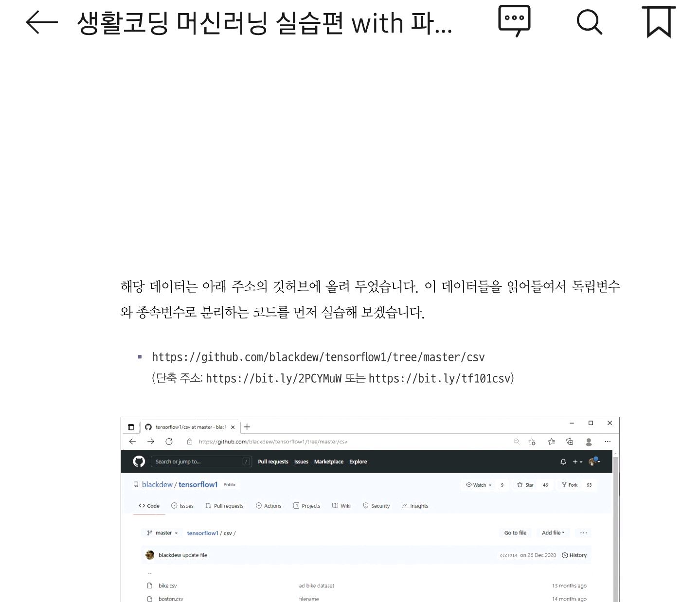
graduate_apply csy
2입자 실습 칼명
14 manths ago
Iris CY
months 3gc
Iris2csV
3dd i7s2
14 months ag0
lemonadeCsu
lemtonate data
14 mnonths 3g0
hiotMNlsT_smmall tar gz
update file
10 months 3g9
stock-csy
2일자 실습
14 months ago
titaric,csy
add trtanic CsV
11 manths ago
그림 2.1 데이터 파일이 있는 플더돌더명: CSV)
02장 표릎 다루는 도구
2
9
14%0 (45/320p)
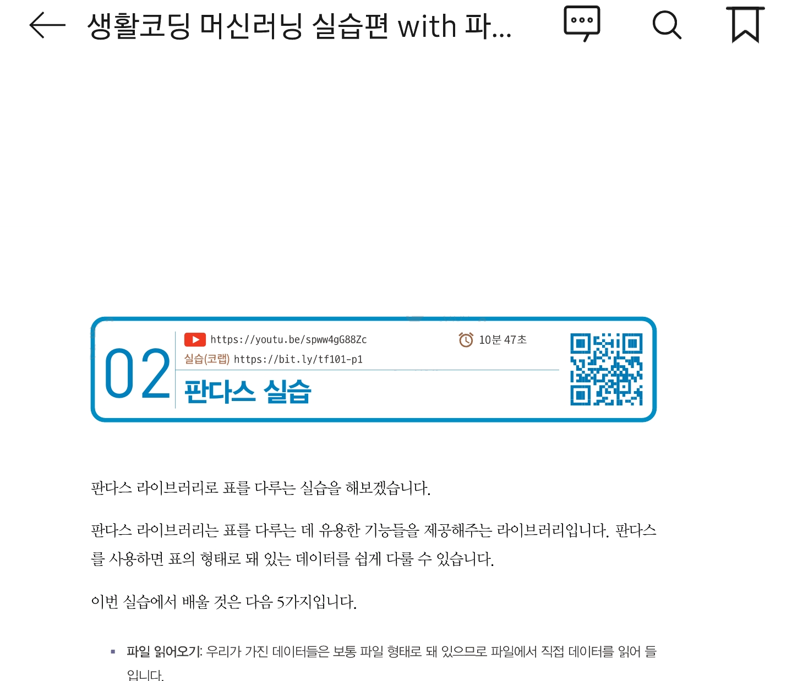
모양 확인하기: 읽어들인 데이터의 모양을 확인합니다
칼럽 선택하기: 데이터에는 종속변수와 독립변수가 같이 들어있습니다. 그래서 학습올 시키기 위해 종 속변수와 독립변수록 분리해서 따로 준비합니다:
칼럽 이름 출력하기: 갈럽올 선택하려면 칼럽 이름올 사용하는데 칼럽 이름올 일일이 입력하거나 칼럽 에 무엇이 있는지 다시 파일로 가서 확인하려면 번거롭습니다 그래서 갈럽들의 이름올 화면에 출력해 주는 도구릎 사용합나다. 화면에 출력된 칼럽 이름 중 독립변수에 해당하는 갈럽들올 선택해서 붙여넣 으면 오타도 줄일 수 잇고 효율적으로 작업할 수 있습니다:
맨 위 5개 관추치 출력하기: 데이터가 어떤 모양으로 들어임는지 확인합니다:
실습 코드와 데이터 실습에 사용할 코드는 다음 주소에 있습니다.
코드노트북) 짓허: https:/ lgithub.com/bLackdewltensorflowzlbLoblmasterlpracticeI-pandas.ipynb
30 01부 테서들로 101
2
9
14%0 (46/320p)
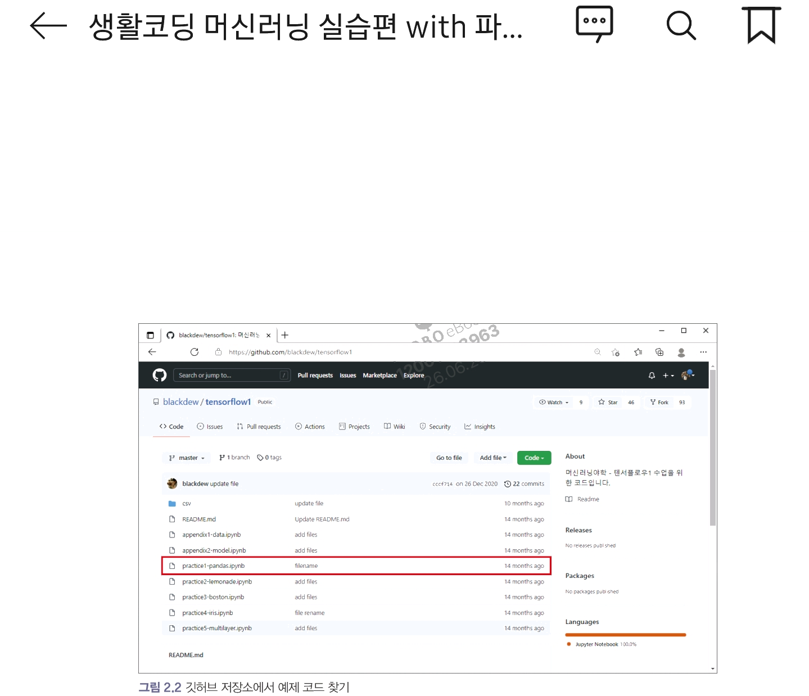
실습에 사용할 데이터는 다음과 같습니다.
레모네이드 https:/lraw.githubusercontent.com/blackdewltensorflowilmasterlcsvllemonade.csV
보스템 https:/ raw githubusercontent com/blackdewltensorflowi 'masterlcsvlboston.csV
아이리스 https:/ raw githubusercontent.com/blackdewltensorflowilmasterlcsvliris.csV
파일 확장자가 csv로 되어 있는데. 이것은 콜마(,) 틀 이용해서 갈#들올 구분한 데이터입니 다 액설과 같이 표틀 보여주는 프로그램에서 csv 파일올 읽어 들이면 테이블 형태로 표시I 니다.
이 파일들은 짓하브에 올려저 있으므로 웬브라우저로 것하브에 들어가서 각 파일이 어떤 모 양인지 직접 확인할 수 있습니다.
02장 표릎 다루는 도구
2
9
15% (47/320p)
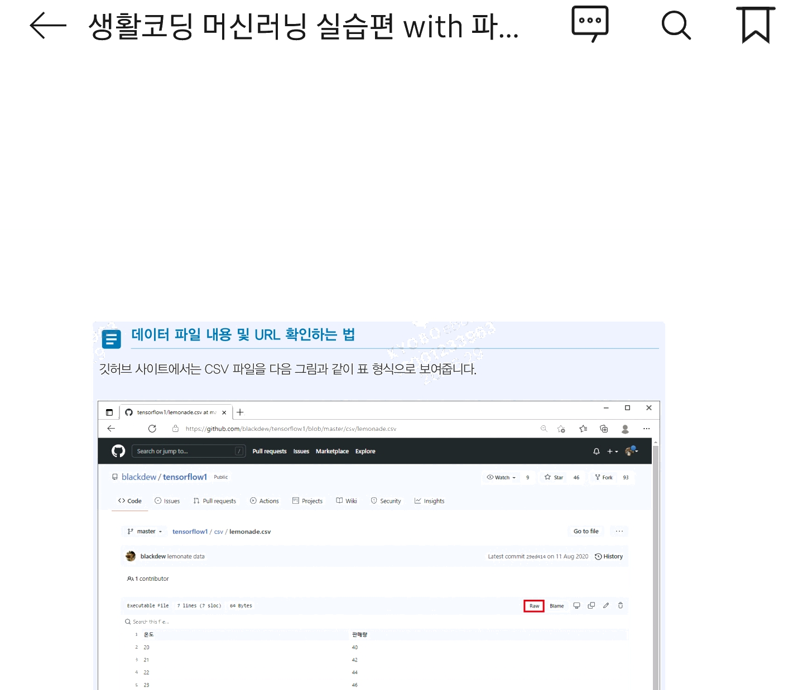
그림 2.3 레모네이드 데이터
표의 오른쪽 위에 잎는 Raw 버튿올 콜리하면 CSV 파일의 원래 모습올 볼 수 있습니다. 이때 주소창에 표시원 URL올 복사한 뒤 코드에 붙여넣어 사용할 수 있습니다
httpslfraw githubusercontent c
https:lfraw githubusercontentcomjblackdewftensarflowl/master/csvflemonade-csv
온도 판매량 리,
22 44
그림 2.4 CSV 파일 내용 및 URL 확인
32 01부 테서들로 101
2
9
15% (48/320p)
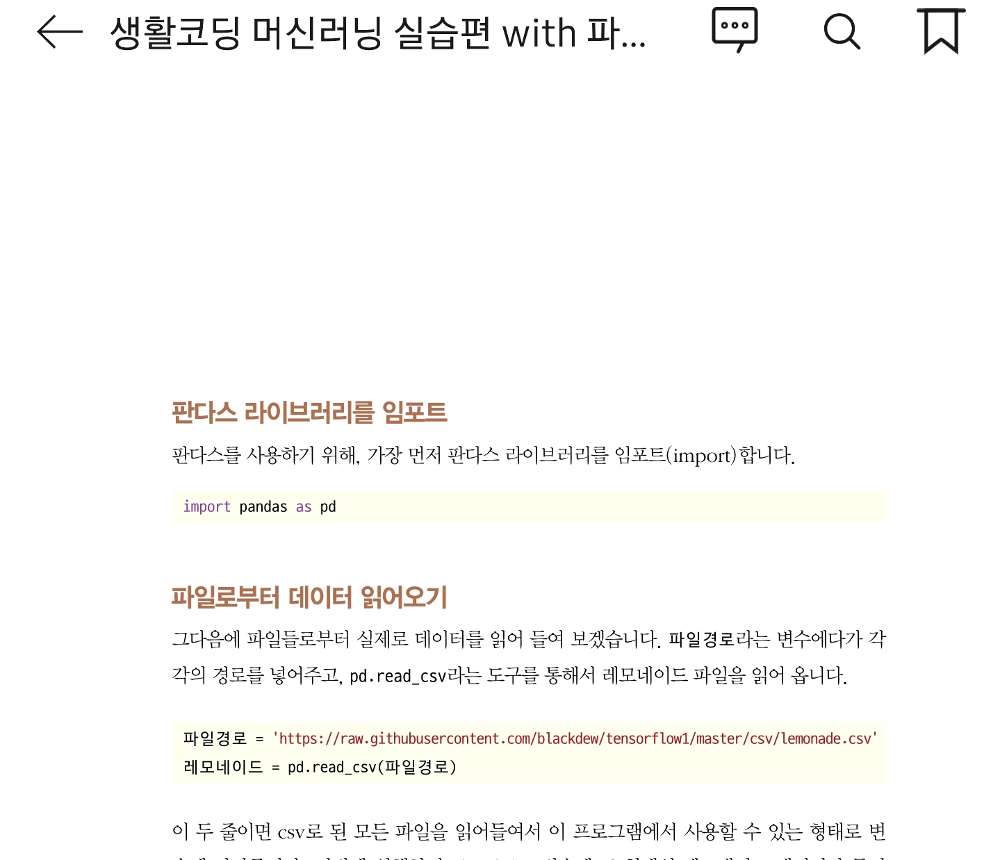
수에 담아숨니다. 이렇계 실행하면 레모네이드 변수에 표 형태의 레모네이드 데이터가 늘어 움니다.
다른 파일들도 읽어 들여불까요?
파일경로 https:llraw.githubusercontent.com/blackdewltensorfLowilmasterlcsvlboston.csV 보스템 pd.read_cSV(파일경로)
파일경로 변수에 보스템 파일의 경로름 넣고 read_csv 함수에 알려주면. 판다스가 그 파일의 데이터름 읽어서 보스템 변수에 담아줌니다.
마찬가지로 아이리스 데이터도 읽어 들입니다.
파일경로 'https: 'raw.githubusercontent.com/blackdewltensorfLowilmasterlcsvliris.CsV 아이리스 pd.read_csv(파일경로)
그런데 이 파일들이 잘 읽어젠는지 지금은 알 수가 없조? 변수에 담겨 있을 때는 정말로 그 안에 데이터가 담겨 있는지 눈으로 볼 수가 없습니다.
02장 표릎 다루는 도구
2
9
15% (49/320p)
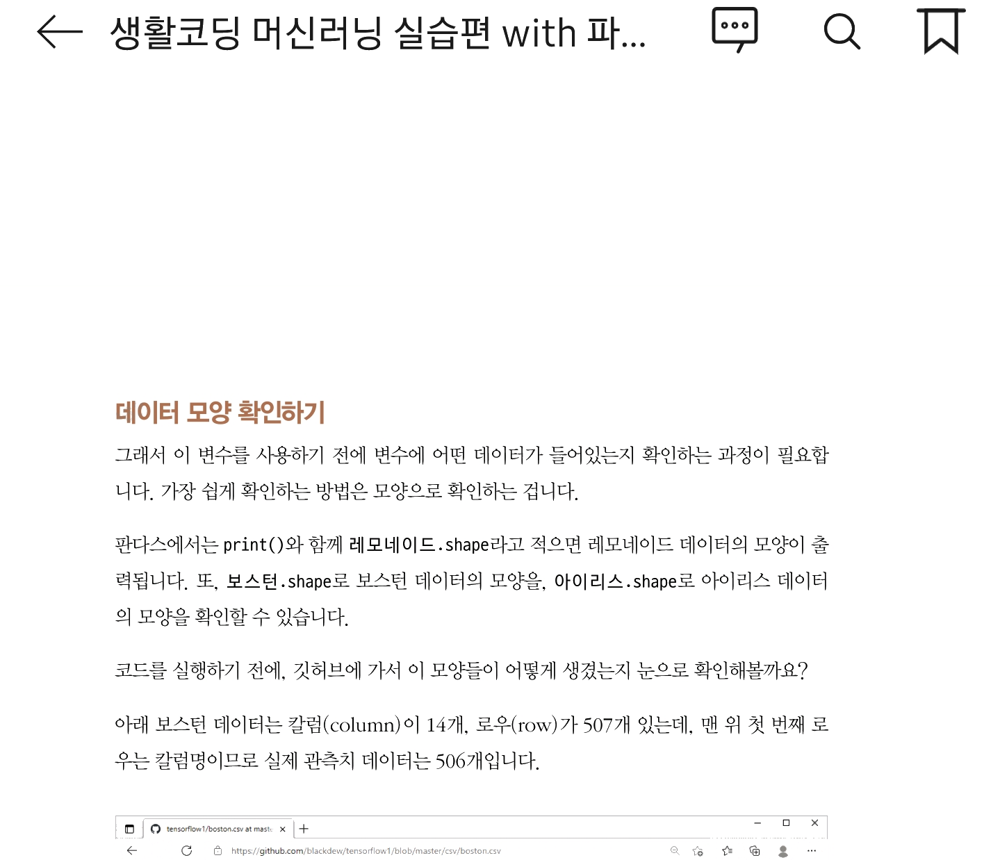
Why GitHub?
Team Fnterprise Explore
Marketplace Pricing
Seardh
Sign in Sign up
blackdew tensorflow1
Notifications
7 Star
날 Fork
Code
Issue3
Pull requests
Lcticns
Prcjects
D Wiki
Security
Insights
master
tensorflowl
bostoncsv
blackdew filename
Latest commit 4351612 on Aug 2020
History
contributcr
1_nE3 (597 102} 그- -
Raw
Blame
Scar다h this
InDu_
Drauo
mUV
D0J632
231
0538
5575
532
#,09
153
395,9
4.93
0.02731
0469
5.227
789
4,9571
17.8
395.9
9.12
215
0,02729
0469
7,153
61-1
2,9671
17,6
392,63
203
32,7
0,03237
2,18
0-38
6,993
-35
6,0522
39,63
29-
33-
005903
0-38
7,1-7
92
6,06z2
396,9
533
362
0,02335
218
0-33
6-3
357
6,0ez2
187
39,12
521
23,7
D529
0524
50iz
Cs
S30J5
J9J,5
12-3
-29
D1443s
0524
617z
95 1
5,95J5
395,9
19,15
027124
125
052
그53
5,0-2I
3-5,63
29,93
165
그림 2.5 보스템 데이터
다른 데이터도 보켓습니다. 레모네이드 데이터가 제일 처음 있없조. 레모네이드 데이터는 칼 검이 2개. 로우가 (개(7개 중 첫 번째는 갈컴명이므로 제외) 로 단순합니다.
34 01부 테서들로 101
2
9
16% (50/320p)
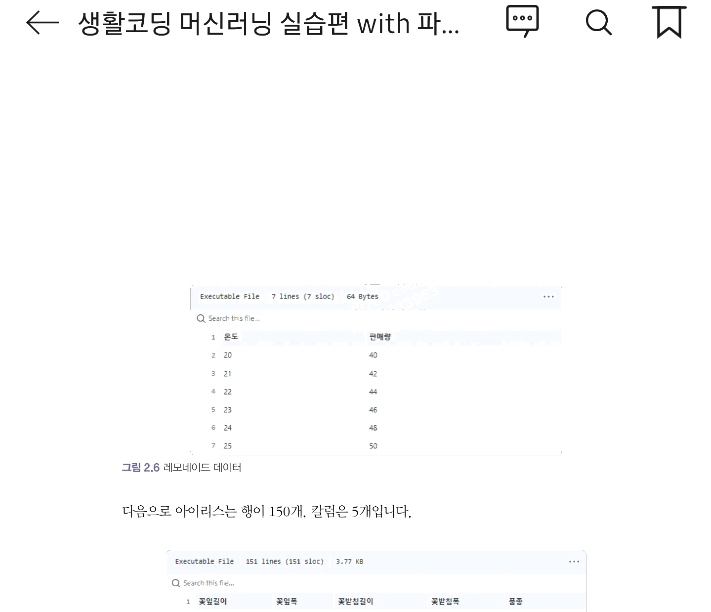
5,1
35
7-
SEtOsa
4,9
3.0
14
02
seto-a
47
3.2
13
02
sEto-a
4,6
15
02
seto-a
5,0
3.6
14
02
seto-a
5,4
3,9
17
JEtosa
4,6
3.4
72
03
SEtosa
5,0
7,5
02
5etosa
4,4
29
7-
02
5etosa
그림 2,7 아이리스 데이터
그럼 코드트 실행시켜서 모양들이 제대로 들어빛논지 확인해보켓습니다.
print(레모네이드.shape) print(보스템.shape) print(아이리스.shape)
실행 결과
(6, 2) (506, 14)
(150, 5)
02장 표릎 다루는 도구
2
9
16% (57/320p)
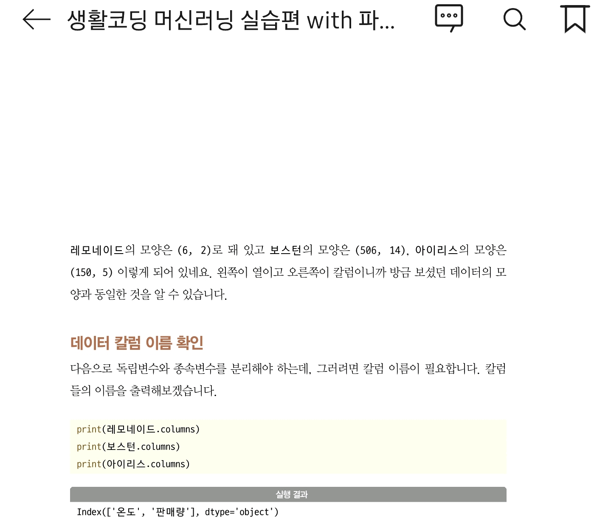
Index(L ' crim zn indus chas nox rm age dis rad' tax ptratio b' 1stat' medv' ], dtype='object' ) Index([' 꽃잎길이' 꽃잎"' 꼴받침길이' , 꼴발침쪽' , 품종' ], dtype='object')
독립변수와 종속변수 분리 그럼 이 이름들올 가지고 종속변수와 독립변수름 분리하켓습니다.
먼저 레모네이드의 독립변수는 온도 칼럼 하나이고 종속변수는 판매량이 덥니다. 대팔호들 2개씩 사용하 것에 유의하세요
독립 레모네이드[[ ' 온도' ]] 종속 레모네이드[[ ' 판매량 ' 1]
이제 데이터가 제대로 분리되없는지 모양올 확인해야 합니다. 출력 결과루 보면 데이터가 6 개고 각각 한 칼림씩 분리원 것을 볼 수 있습니다.
36 01부 테서들로 101
2
9
16% (52/320p)
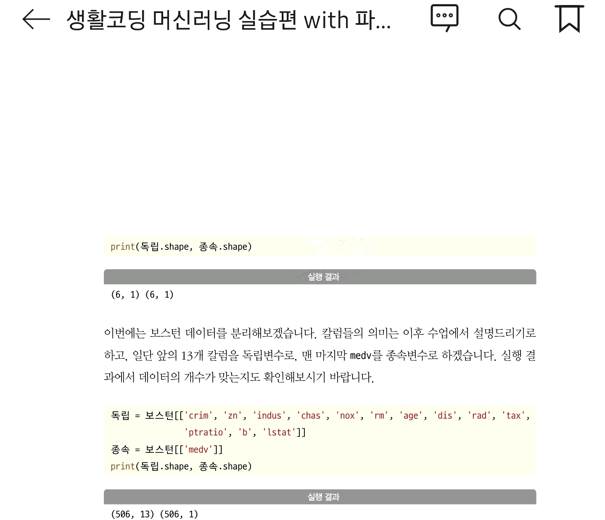
마지막으로 아이리스도 분리해보켓습니다. 독립변수로는 앞에 4개의 칼럽올 사용하고 종속 변수로 품종이라는 칼점 하나름 사용합니다. 이렇계 하면 칼럽별로 분리가 잘되는 겉 볼 수 있습니다.
독립 아이리스[[ ' 꼴잎길이 ' 꽃잎쪽' 종속 아이리스[[ ' 품종 ' 1] print(독립.shape, 종속.shape)
꼴받침길이' 꼴발침쪽 ' 1]
실행 결과
(150, 4) (150, 1)
3개의 데이터름 파일로부터 읽어 들여서 독립변수와 종속변수로 분리하는 데이터 준비 과정 올 마침습니다 이렇계 분리원 데이터지 가지고 모델올 만들어서. 모델에 이 데이터들올 학습 시키면 덥니다.
02장 표릎 다루는 도구
2
9
17% (53/320p)
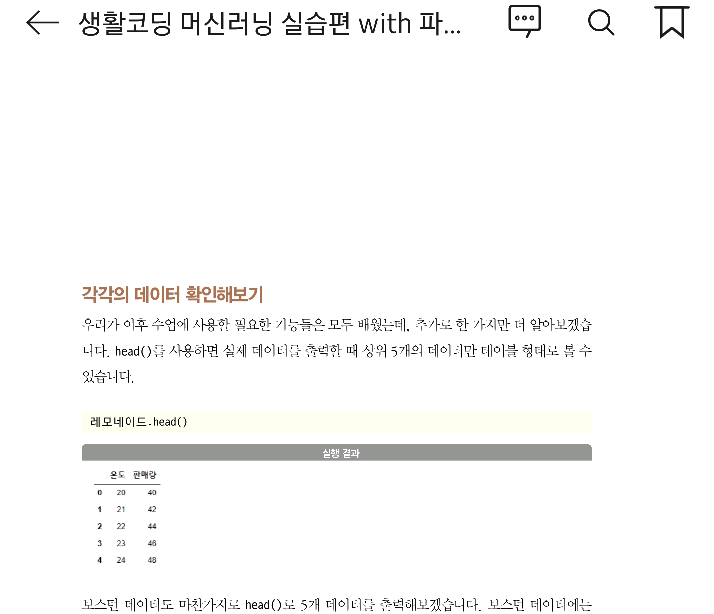
506개 로우가 있는데 모두 출력해서 보는 건 크게 의미가 없으므로 어떤 데이터들이 들어있 논지 대략적으로 눈으로 확인하기 위해서 head() 로 데이터름 출력해보는 것입니다.
보스템.head()
실행 결과
crim
indus Chas
nox
Tm age
dis rad tax ptratio
Istat medv
0.00632 18.0
2.31
0.538 6.575 652 4.0900
296
15.3 396.90 4.98
24.0
0.02731 0.0 0.02729 0.0 0.03237 0.0
7.07
0.469 6.421 78.9 4.9671
242
17.8 396.90 9.14
21.6
7.07
0.469 7.185 61.1 4.9671
242
17.8 392.83 4,03
34.7
2.18
0.458 6.998 45.8 6.0622
222
18.7 394.63 2.94
33.4
0.06905 0,.0
2.18
0.458 7.147 54.2 6.0622
222
18.7 396.90 5,33
36,2
아이리스 데이터도 마찬가지로 출력해보켓습니다.
아이리스.head()
38 01부 테서들로 101
2
9
17% (54/320p)
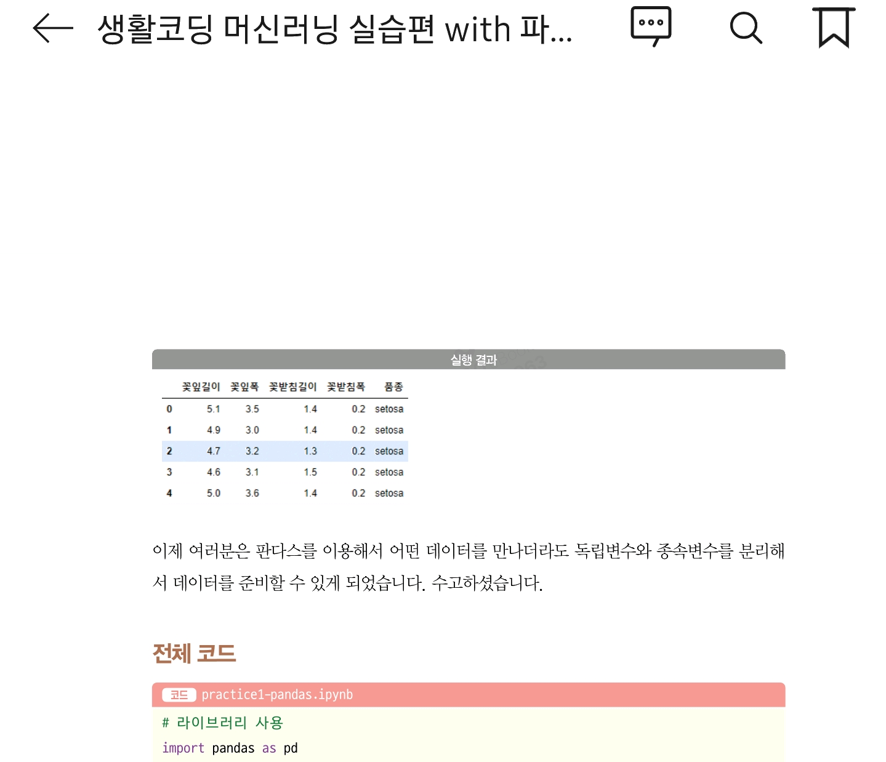
# 파일로부터 데이터 읽어오기 파일경로 https:llraw.githubusercontent.com/blackdewltensorflowilmasterlcsvllemonade.cSV 레모네이드 pd.read_csV(파일경로)
파일경로 https:llraw.githubusercontent.com/blackdewltensorfLowilmasterlcsvlboston.csv 보스템 pdread_CSV(파일경로)
파일경로 'https:llraw.githubusercontent.com/blackdewltensorfLowilmasterlcsvliris.csv 아이리스 pd.read_csv(파일경로)
데이터의 모양 확인 print(레모네이드.shape) print(보스템.shape) print(아이리스.shape)
# 데이터 갈럽명 확인 print(레모네이드.columns) print(보스템.columns) print(아이리스.columns)
02장 표릎 다루는 도구
2
9
17% (55/320p)
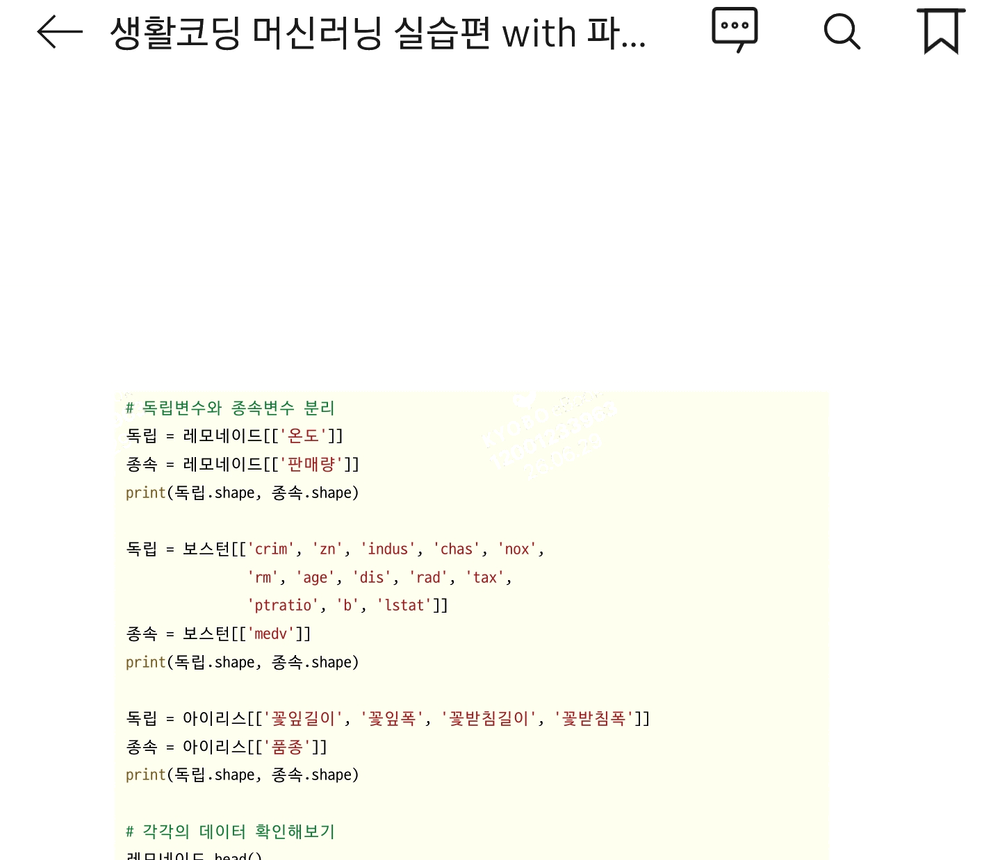
내 오 니 Vcqu( )
보스템 .head() 아이리스.head()
40 01부 테서들로 101
2
9
789 (56/320p)